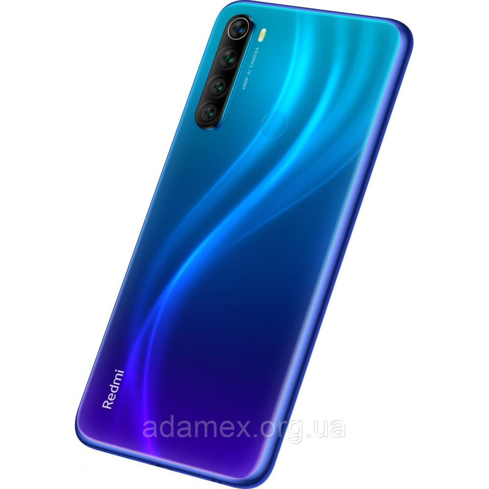

Xiaomi Redmi Note 8 - нова модель в лінійці збалансованих пристроїв середнього цінового сегмента. Пристрій одержав Безрамковий виконання з мініатюрним вирізом-краплею в дисплеї, а корпус доповнений незвичайними квітами і візерунками. Встановлюється 6,3-дюймова IPS-матриця з роздільною здатністю 2340х1080 точок. 8-ядерний процесор Snapdragon 665 об'єднує в собі досить високу продуктивність і непогану енергоефективність, завдяки чому здатний справлятися з повсякденними завданнями і зберігати тривалу автономність. Основна камера складається з 4-х модулів на 48, 8 і двох по 2 МП. Головний сенсор на 48 МП Sony IMX586 доповнений технологією штучного інтелекту для розпізнавання сцен і осіб. Підвищити комфорт повсякденного активного використання Xiaomi Redmi Note 8 дозволяє підтримка швидкої зарядки на 9V. |
 Купити
|